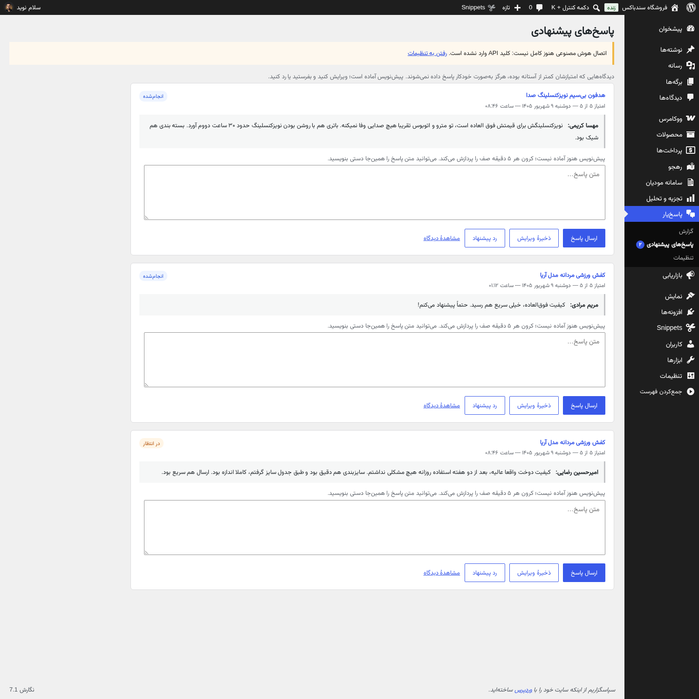
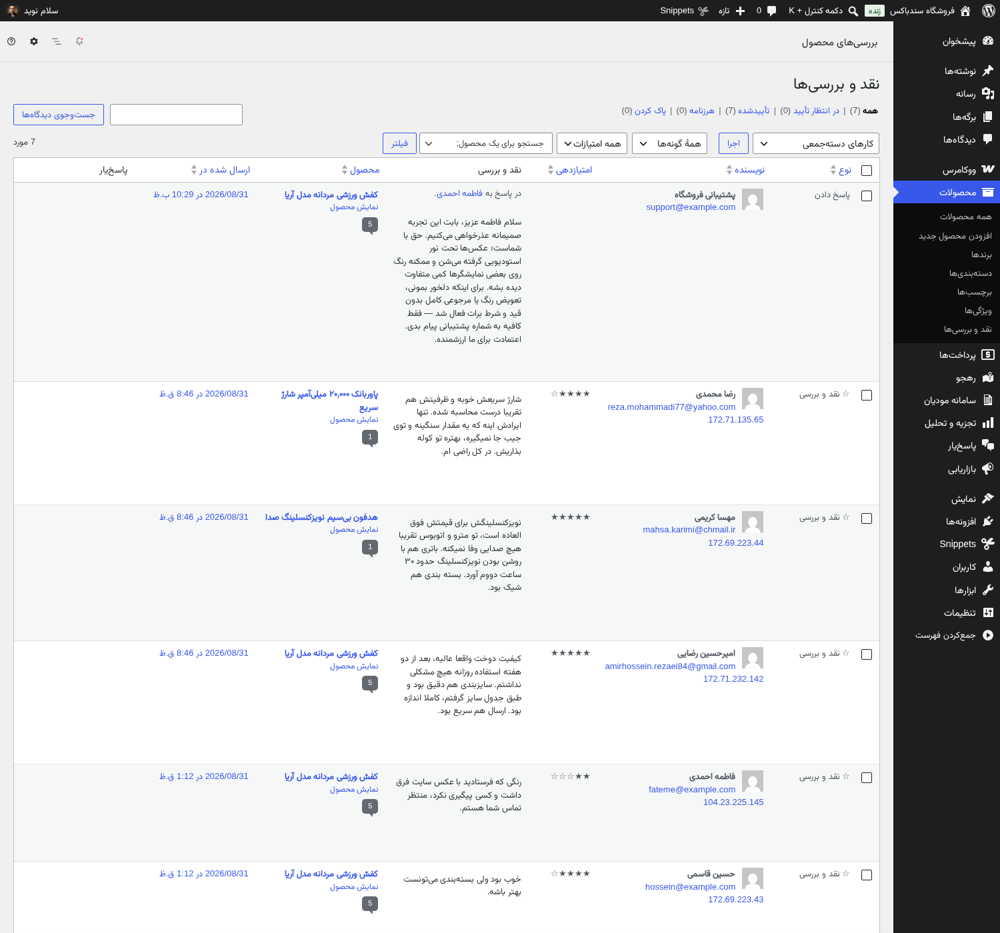
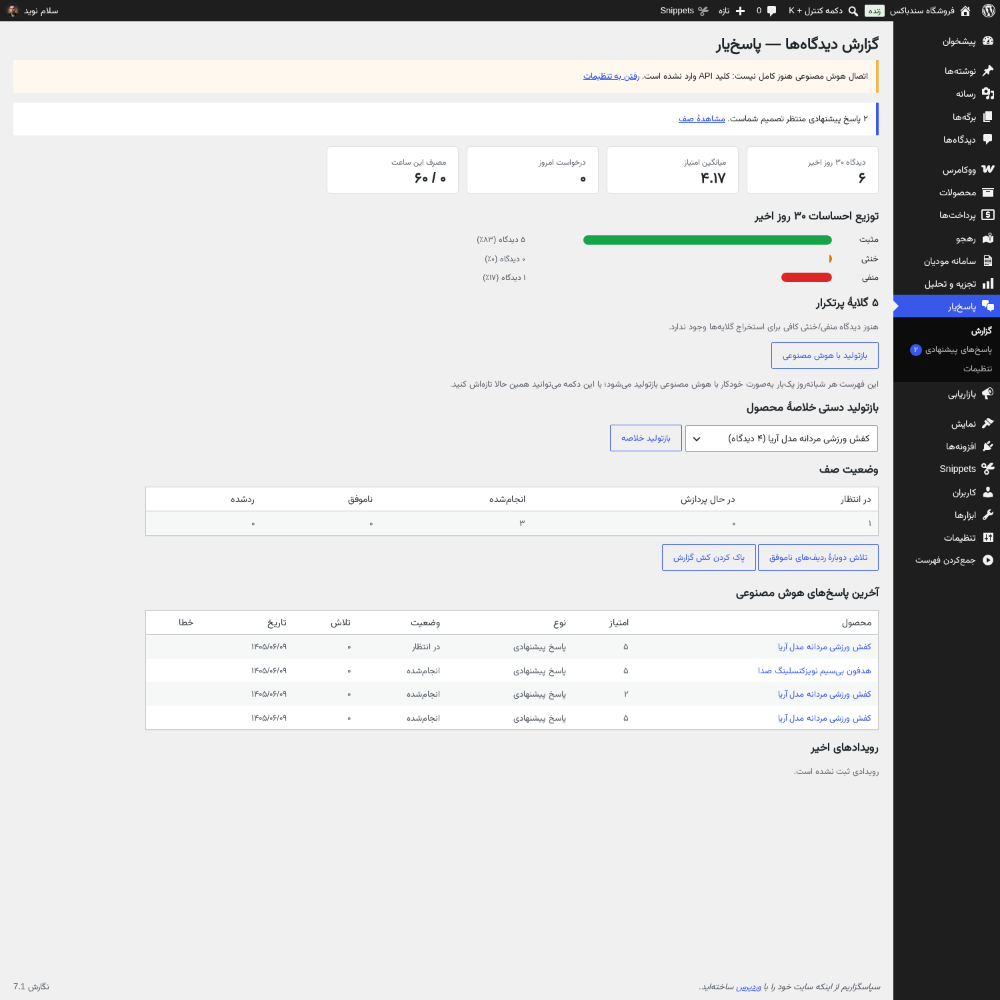
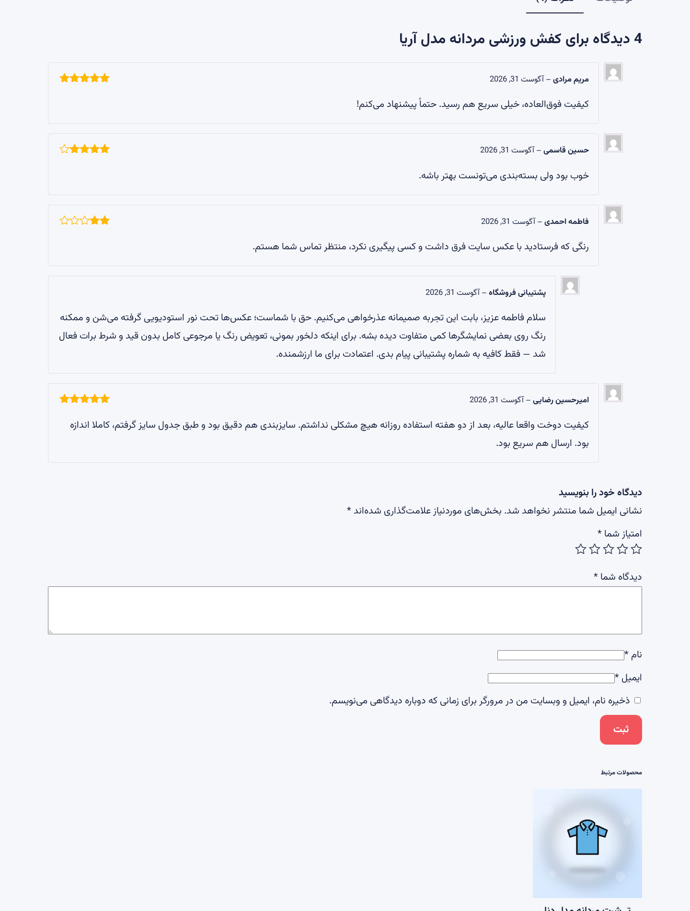
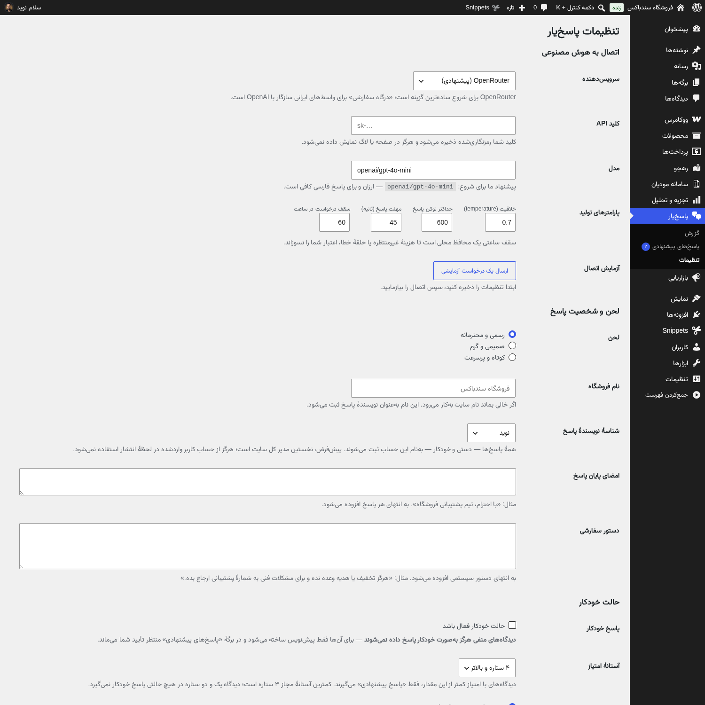

از محیط پیشخوان وردپرس و صفحهٔ محصول — برای بزرگنمایی کلیک کنید





همه در یک افزونه — بدون وابستگی به سرویس خارجی اجباری
پاسخ متناسب با متن و امتیاز هر دیدگاه؛ لحن برند قابل تنظیم، محدودیت طول و ممنوعکردن درخواستهای حساس.
دیدگاههای ۴ و ۵ ستاره خودکار جواب میگیرند؛ منفیها پیشنهاد میمانند تا خودت تایید کنی — هیچوقت کورکورانه جواب منفی نمیرود.
جمعبندی دیجیکالایی نقاط قوت و ضعف روی تب دیدگاههای محصول — با شورتکد یا خودکار.
نمرهٔ رضایت، توزیع ستارهها، روند ماهانه و «۵ گلایهٔ پرتکرار» برای مدیر محصول.
دیدگاههای تبلیغاتی قبل از ورود به صف شناسایی و رد میشوند؛ صف فقط برای دیدگاههای واقعی.
OpenRouter، OpenAI یا هر درگاه سازگار با OpenAI-API ایرانی — کلید رمزنگاریشده ذخیره میشود و پاسخها روی سایت خودت میمانند.
در تنظیمات، سرویس را انتخاب و کلید API را وارد کن (OpenRouter ارزانترین شروع است). کلید بهصورت رمزنگاریشده ذخیره میشود.
«پیشنهادی» برای شروعِ محتاطانه؛ بعداً میتوانی «خودکار» را فقط برای ستارههای مثبت روشن کنی.
دکمهٔ «پاسخ با AI» کنار هر دیدگاه — پیشنویس را ویرایش کن و منتشر کن. گزارشها هم از همین لحظه پر میشوند.